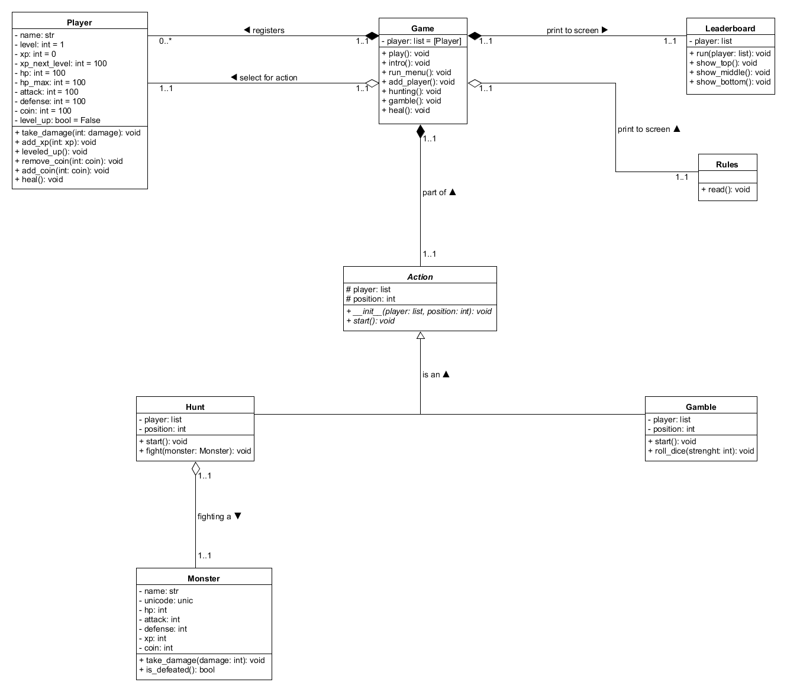

Python
Medieval Life
Welcome to the Medieval Life game!
With this Python program you can hire new heroes, train them or gamble at the tavern.
Remember to heal your heroes after an adventure.
Medieval Life is an engaging text-based adventure game set in the Middle Ages. Players can recruit heroes, embark on hunting expeditions, gamble at taverns, and rise through the ranks to become legendary figures in a medieval world.
- For a better user experience, open the medieval_life.exe file
Requirements:
Python 3.x
Design Principles:
The program follows several object-oriented design principles to ensure code reusability, maintainability, and extensibility.
- Polymorphism:
Polymorphism is achieved through the use of the abstract base class Action and its concrete subclasses Hunt and Gamble. These subclasses implement the abstract start method defined in the base class, allowing them to exhibit different behaviors while sharing a common interface.
- Inheritance:
Inheritance is used extensively in the program. The Hunt and Gamble classes inherit from the abstract base class Action, inheriting its common attributes and methods. This promotes code reuse and allows for the implementation of game-specific logic in the subclasses.
- Abstraction:
The class Action is an abstract base class that defines the common interface for all child classes. It declares abstract methods (__init__ and start) that must be implemented by the concrete subclasses. This abstraction allows the program to work with game objects without needing to know the specific implementation details of each class. By following these principles, the program achieves code modularity, extensibility, and maintainability. New action types can be added by creating new subclasses without modifying the existing code. The use of polymorphism and inheritance promotes code reuse and allows for a consistent interface across different game types.
UML Diagram
Here is the complete UML representation of the program. I have included cardinality between classes and relationship between them.